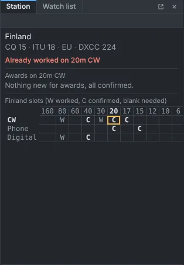
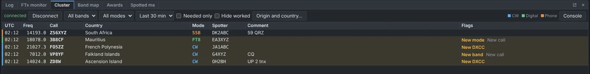
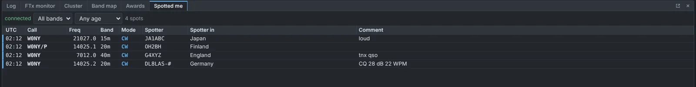
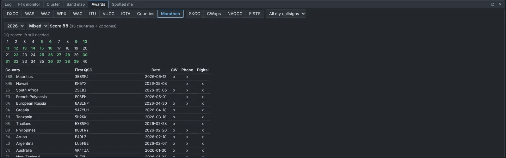

How to use QRZero
From a fresh install to your first QSO, a radio connected and your QSLs going out. QRZero also has a full Help window inside the app (from the ☰ menu) with a search box; this page is the short tour.
1. Install
Get the file for your computer from the download page. On Windows run the setup program (or the portable one). On a Mac drag it to Applications and follow the first-launch steps. On Linux install the .deb or .rpm, or make the AppImage executable.
2. First run
A setup wizard walks you through the basics. Every step except your callsign can be skipped, and you can run it again from Settings → General; it never removes anything.
- Your callsign, plus any calls you held before, so old QSOs are labelled correctly.
- Callsign lookup: your QRZ.com or HamQTH login, if you have one.
- Home location: name, grid square, city, state, zones.
- Equipment: radios, antennas (tick the bands each covers) and amplifiers.
- Entry fields: a starting layout: general/DX, CW, CW clubs, parks and summits, satellites or casual contesting.
- Confirmations: tick Club Log, QRZ Logbook, LoTW or eQSL and enter the logins.
- Import an ADIF file from your old logger.

3. Log a QSO
Type the call, press Tab or Space, and QRZero fills in what it can. Press Enter to log. The start time is taken from when you began typing, the form clears, and the cursor goes back to the call box.
- Boxes filled by a lookup are coloured differently from what you typed, and what you type always wins.
- Type a frequency and the band is set; choose a mode and the usual report is filled in. The Mode box offers a short list of your own: add any ADIF mode under Settings → Modes.
- Enter date/time lets you log from a paper log after the fact.
- The Station pane tells you if a call would be new for any award. Worked before lists every earlier QSO with the station; Full adds a summary line of bands, modes and confirmations. Click a cell in the slot grid to list every QSO in that slot.
- Double-click any QSO in the log to edit all of its fields in its own window, or select many and use Bulk edit to set one field on all of them.

4. Connect a radio
Add your radio under Settings → Equipment and pick a Rig control method:
| Hamlib rigctld | Almost any radio Hamlib supports. |
| TCI | ExpertSDR, SunSDR, Thetis, and Flex through a TCI bridge. |
| Kenwood / Elecraft / Flex CAT | Serial or SmartSDR CAT ports. |
| Yaesu CAT | FT-991A, FTDX10, FTDX101, FT-710 and other recent Yaesu radios. |
| Icom CI-V | IC-7300, IC-7610, IC-705 and others over USB. |
Pick the radio in the QSO panel and the frequency, band and mode follow your tuning. Typing a frequency or changing mode tunes the radio. With several radios (SO2R, Flex slices) use Alt+1, Alt+2 to switch. A rotator can be added the same way: Hamlib rotctld, Yaesu GS-232 over serial or TCP, or PstRotatorAz.

5. WSJT-X, JTDX and N1MM+
QRZero listens over UDP. In WSJT-X or JTDX open File → Settings → Reporting, set the UDP Server to 127.0.0.1 port 2237 and tick Accept UDP requests. Logged QSOs then arrive in your log and decodes appear in the FTx monitor pane, coloured by what you need.
For N1MM Logger+ open Config → Configure Ports, Mode Control, Winkey, etc → Broadcast Data, tick Contacts and Radio, and use the address 127.0.0.1:12060. QSOs you log, edit or delete in N1MM are followed by QRZero.

6. Spots and alerts
Connect to a DX cluster in Settings → DX cluster. Spots that would be new for you are flagged, and the Needed now pane can play a sound or pop up an alert. Click a spot to tune the radio; for split spots the radio is set up in split too. Needed now puts the most wanted entities first, using Club Log's Most Wanted ranking. The Band map and Watch list keep the stations you care about in view, and the Spotted me pane lists the spots of your own callsigns so you can see who hears you. The optional POTA spots pane (turn it on from Layout) lists the Parks on the Air activators on the air, flagged by what you need.
To get alerts away from the radio, open Settings → Alerts, tick Send alerts through ntfy and subscribe to the topic in the free ntfy app on your phone. Needed spots, watch list hits and DXpeditions you still need are sent while QRZero runs.
To spot a station you just worked, use Spot… in the entry panel. It shows the exact line that will go to the cluster and sends nothing until you click Send spot.


7. Awards
The Awards tab tracks DXCC, WAS, WAZ, WPX and the CQ DX Marathon as you log, plus SKCC, CWops, NAQCC and FISTS for CW operators. Worked and confirmed are shown separately. Use Settings → Awards to hide the ones you do not chase, or to switch on V for DXCC credit granted by LoTW. DXCC also shows 5BDXCC band by band and the Honor Roll; WAS has 5BWAS and Triple Play, and WAZ has 5BWAZ.

8. QSLs and uploads
Open the QSL window from the ☰ menu. Each service (LoTW, Club Log, QRZ Logbook, eQSL) can upload new QSOs automatically a couple of minutes after you log, or in bulk for a date range after a preview. Confirmations can be downloaded back so your Awards stay current. For paper cards, mark a card received or queue one to send, review the queue with full QSO and contact details, print labels, and mark them sent.

9. Import and export
Choose Import ADIF… from the ☰ menu, pick the file and the location those QSOs were made from. Leave Skip duplicates on, so importing the same file twice is safe. Fields another program added for itself are kept and come back out on a Full export. QRZero makes daily backups automatically; restore one from Settings → Backups. Statistics… in the ☰ menu sums up the log: DXCC progress by year, confirmation rates and your most worked entities and calls.
10. Arrange the window
Panes can be dragged into tab groups, resized, hidden or popped out to another screen. Use the Layout button in the top bar to show or hide panes and to save and recall layouts. The main window and pop-outs reopen at the size and place you left them, and pop-outs can be kept on top of other windows. QRZero draws its own title bar; untick Frameless windows in Settings → General for the system frame.
11. Browser mode
The same screens run in a web browser. The server is not in the release downloads: build it from the source (cargo run --release -p qrzero-server, see the README on GitHub), point it at your log folder and open the link it prints. The desktop app and the server cannot run at the same time against the same log.
12. Help
- The in-app Help window has a full manual with search.
- Report a bug or ask for a feature on GitHub.
- Back up your log, and check the release notes when you update.